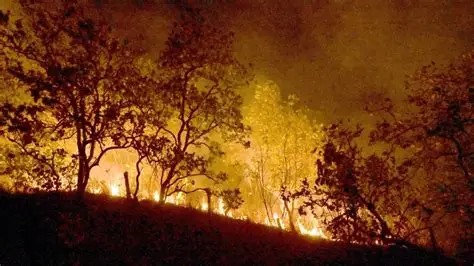
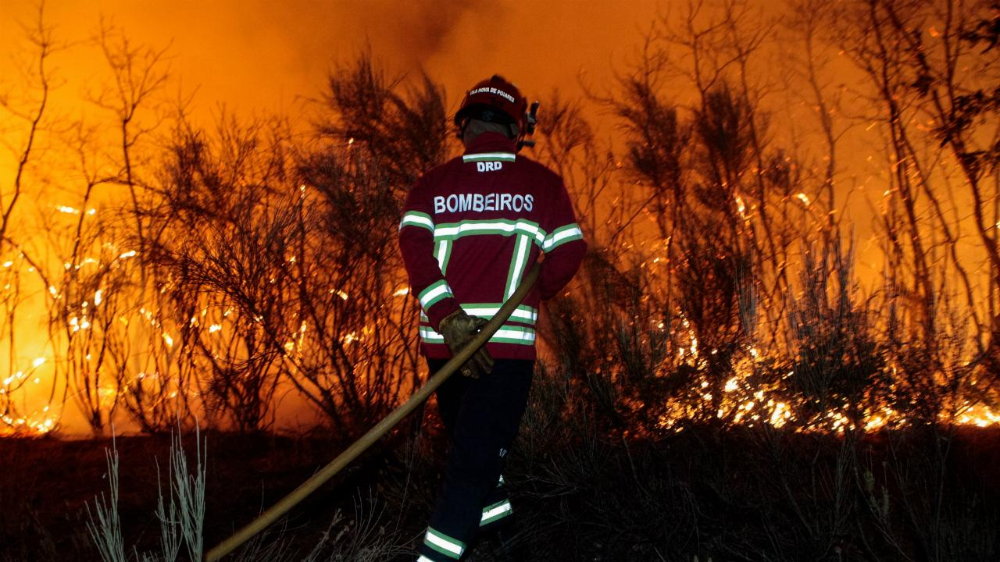

Impactos
As queimadas afetam a saúde das pessoas, destroem a biodiversidade e trazem prejuízos econômicos para comunidades.

Causas, impactos e prevenção
Queimadas são incêndios que acontecem em florestas, campos ou áreas rurais. Elas podem ser provocadas pelo ser humano ou pela própria natureza, como em casos de raios.
As queimadas afetam a saúde das pessoas, destroem a biodiversidade e trazem prejuízos econômicos para comunidades.
Para evitar queimadas, nunca jogue lixo no chão, não faça fogueiras em locais proibidos e sempre avise os bombeiros em caso de fogo.
